那天清晨，我把相機包背上肩時，還以為今天的任務很單純：用粉色運動背心、牛仔短褲和山光，拍出一組乾淨、明亮、有呼吸感的照片。模特阿晴站在稜線上整理短髮，風把霧推過來，她看著我笑說：「如果今天山神願意，我們就拍到夕陽。」
我當時只顧著測光，沒想到她說的「山神願意」，後來會變成一個比通告表還嚴格的行程。

我在稜線上等她變成早晨的一部分
日出剛爬上遠峰，金邊落在阿晴的肩線和髮梢。我請她站直，手輕輕撥過短髮，表情不要太用力，只要像剛剛聽見一個好消息。
快門聲響起的時候，霧像幕布一樣掀開。她忽然低頭，從鞋邊撿起一小片銀色糖果紙，塞進我相機包側袋。我們都愣了一下，然後她說：「第一張就拍到山的漂亮，也順手收走山不需要的東西，挺好。」
本段用圖：show001.jpg
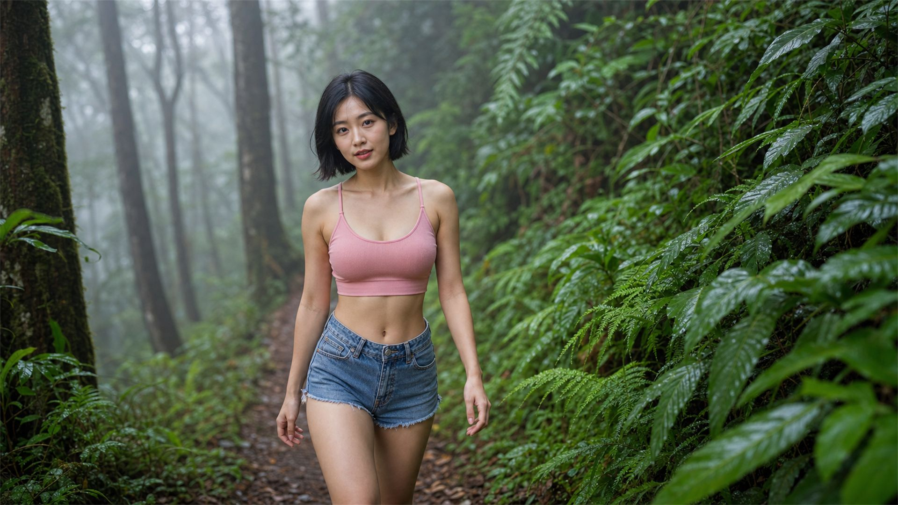
她一邊走向鏡頭，一邊替蕨葉讓路
進入杉林後，山徑變窄，蕨類從兩側探出來。阿晴照著我的指示慢慢走近，眼睛看鏡頭，嘴角放鬆。她走得很輕，像怕踩痛雨後的泥。
我蹲低取景時，發現一條被踩歪的小枝卡在步道中央。她沒有急著擺下一個姿勢，而是先把枝條移到旁邊，笑我：「攝影師，你拍的是自然，不是把自然排除在畫面外。」那句話讓我整天都不太敢亂挪東西。
本段用圖：show002.jpg
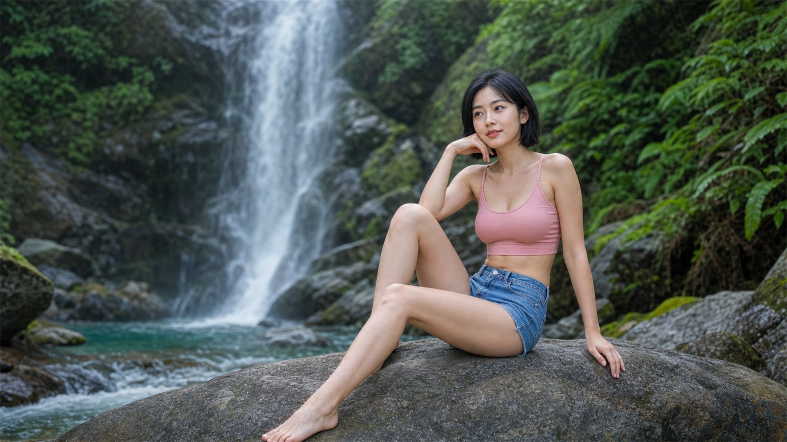
瀑布把我們的玩笑都洗得很亮
瀑布下方水氣很細，我用鏡頭布擦了三次還是起霧。阿晴坐在光滑的石頭上，一膝抬起，表情安靜，像正在聽水替她講話。
拍完後她突然指著我外套說：「你現在看起來像一台會走路的除濕機。」我笑到對焦點跑掉。那是今天第一個真正失敗的快門，但也讓她接下來的笑都變得很自然。
本段用圖：show003.jpg
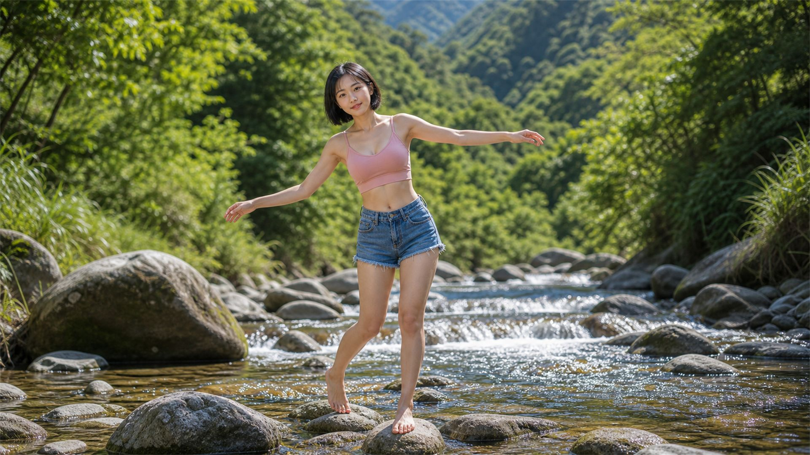
我叫她保持平衡，她叫我先管好相機
溪水淺得透明，石頭被早上的光照得像一串小小的舞台。我請阿晴張開手臂，在石上保持一點搖晃的活力。
她剛站穩，我就踩進水裡半隻鞋。她笑到差點真的失去平衡，還很有禮貌地問：「這是為了捕捉溪流生態做出的犧牲嗎？」我說是，並且要求她不要把這段寫進工作花絮。
本段用圖：show005.jpg
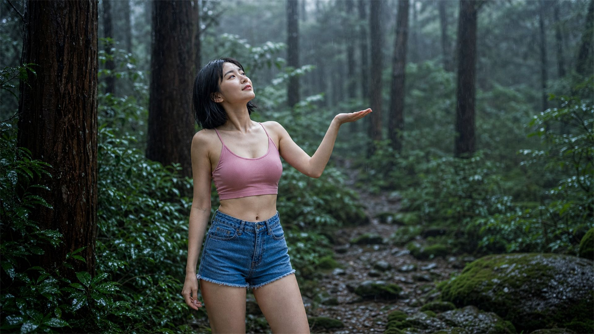
雨下來時，我們決定不躲得太快
午後前的杉林忽然轉冷，細雨落在樹皮上，把整片林子染成藍灰色。我請她抬手，像在確認雨是不是真的到了。
她看著掌心說，這種雨最容易讓人想起水從哪裡來。山替城市存著水，也替我們的懶惰收著帳。那一刻，我沒有立刻按快門，因為她的語氣太輕，輕到我怕相機聲會把它打斷。
本段用圖：show012.jpg
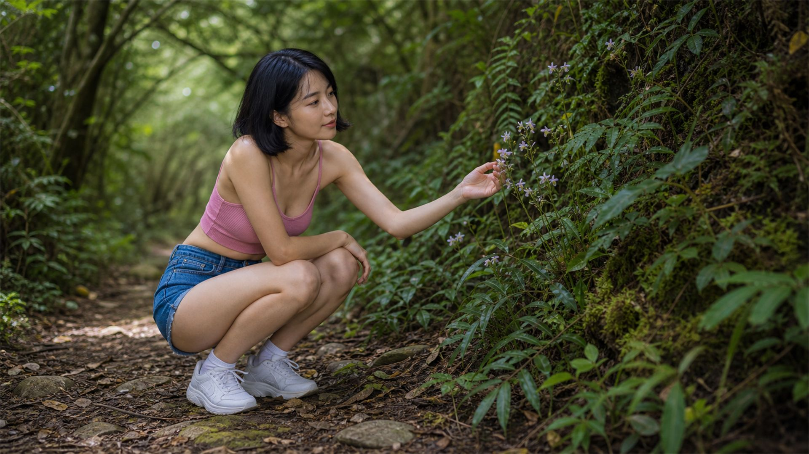
為了拍一朵蘭，我們一起蹲得很低
在一條不起眼的小徑上，阿晴發現幾朵藏在蕨葉旁的迷你蘭花。我本來想讓它只是背景，她卻蹲下來看了很久，像在跟一個很害羞的朋友打招呼。
我用長焦壓低角度，讓她的好奇心和那片綠色隧道疊在一起。拍完她說：「很多東西不是不重要，只是我們平常站太高。」我點頭，順便把背包裡的空水瓶壓扁，提醒自己今天不要製造新的麻煩。
本段用圖：show019.jpg
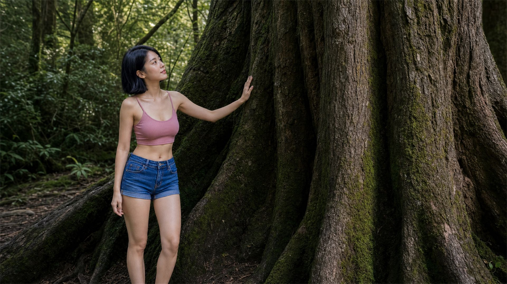
她把掌心放上樹皮，我把聲音放小
我們抵達神木時，整隊人都自然安靜下來。阿晴把手貼在粗糙樹皮上，沒有擺誇張姿勢，只是站著，像在向一位很老的長輩問好。
我拍了幾張後放下相機。那棵樹不需要我們替它加戲。它只是活得夠久，久到可以讓兩個趕通告的人突然記得：森林不是拍攝場景，森林本來就在這裡。
本段用圖：show022.jpg
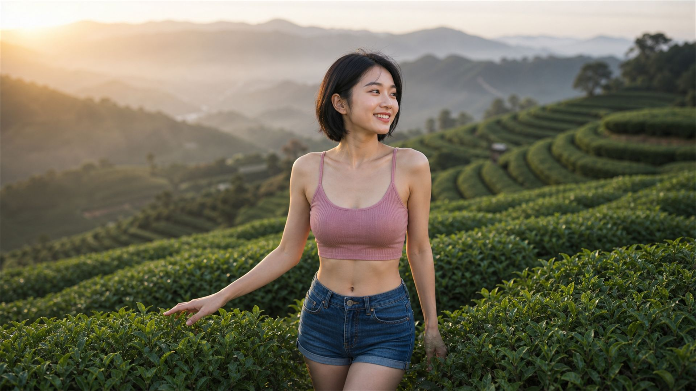
到了茶園，綠色突然變得有秩序
茶山的線條像被人用梳子梳過，整齊到我一開始反而不知道怎麼構圖。阿晴站進茶壟之間，手指輕碰葉尖，笑得很清爽。
茶農經過時提醒我們不要踩進剛修過的區域。阿晴立刻道歉，還拉著我重新走回步道。她小聲說：「美感如果要靠破壞才能成立，那就太沒本事了。」我把這句記在手機裡，後來成了這組照片的隱形標題。
本段用圖：show025.jpg
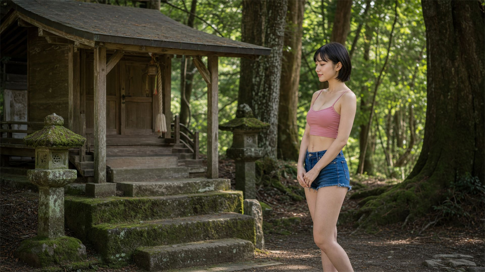
我們沒有許願，只把袋子綁緊
下午的森林裡有一座小小的山祠，木頭舊了，苔也厚了。阿晴站在前方，雙手自然合著，不像表演虔誠，更像是在提醒自己不要吵。
那時我們的垃圾袋已經裝了糖果紙、斷掉的塑膠束帶、半片濕掉的標籤。她說：「這些東西如果留在山裡，會比我們的照片待得更久。」我突然覺得背上的相機包變輕了，垃圾袋反而變得很有重量。
本段用圖：show058.jpg
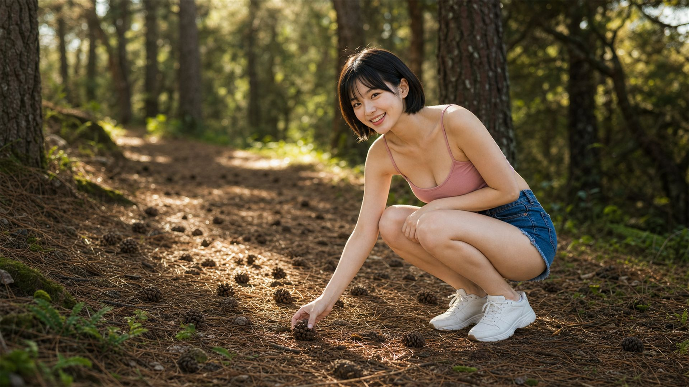
她撿起松果，我差點以為又發現垃圾
在松果鋪滿的小徑上，我請阿晴蹲下，手剛碰到一顆松果，我就本能地把垃圾袋遞過去。她抬頭看我三秒，然後笑到整個肩膀都抖。
「攝影師，這顆是山自己做的。」她把松果放回原位，像替它辦理無罪釋放。我拍下她那個調皮表情，覺得今天最環保的教育，可能就是學會分辨什麼該帶走，什麼該留下。
本段用圖：show060.jpg

這次我終於沒有把鞋踩濕
藍色溪水從石縫間穿過，亮處像玻璃，陰影像墨。阿晴一步踩上石頭，雙手自然打開，笑得像早就知道我會緊張。
我在岸邊退了半步，給她留出完整的水面和身體線條。她安全走過來後，第一句不是問拍得怎樣，而是問：「剛剛那邊是不是有一個瓶蓋？」我們回頭找了三分鐘，最後真的在石縫裡找到它。那個瓶蓋很小，小到幾乎不值得一張照片，卻值得我們彎一次腰。
本段用圖：show064.jpg
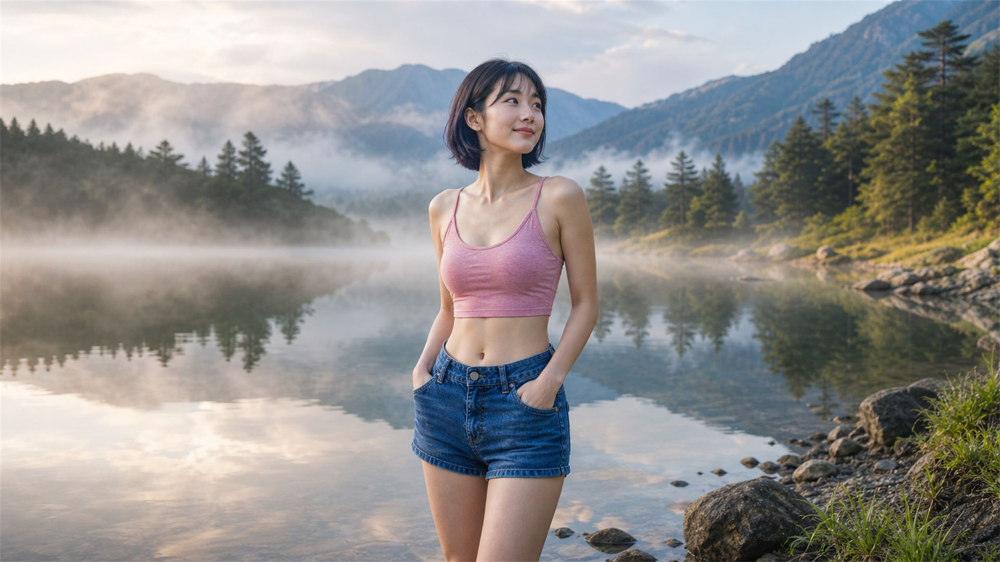
湖面沒有責備我們，只把我們照出來
霧湖旁的風很慢，樹影倒在水裡，像另一座更安靜的森林。阿晴站在岸邊，手插在短褲口袋裡，笑得很淡。
我在觀景台外緣停下來，沒有再往濕軟的湖岸踩。那天我們已經學乖：好照片不是離景物越近越好，而是知道自己該停在哪裡。她看著倒影說：「我們今天好像不是來拍山，是來練習不要打擾山。」
本段用圖：show065.jpg
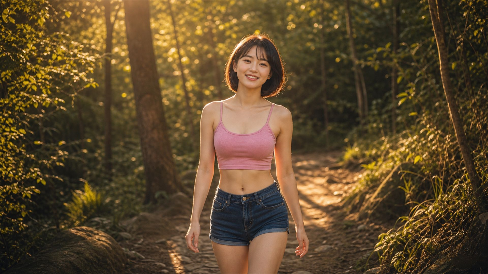
金色步道上，她走向鏡頭，也走向結束
傍晚的林道被斜光切成一段一段，葉子亮得像剛擦過。阿晴朝鏡頭走來，肩膀放鬆，笑容裡有一整天的疲倦，也有一點完成任務的得意。
我們把今天撿到的小東西排在一張廢紙上清點，數量不多，卻像某種安靜的收據。她問我會不會把這件事寫進故事。我說會，但不會寫得太偉大，因為我們只是做了該做的小事。
本段用圖：show071.jpg
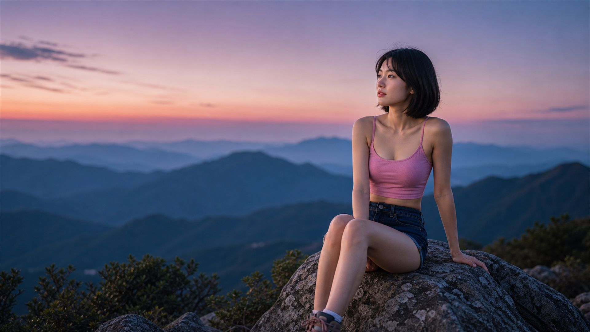
餘暉退去前，我終於明白今天真正的主角
最後一張在峰頂拍。天空從粉色退到藍色，山的輪廓一層一層暗下來。阿晴坐在安全的岩邊，膝蓋微彎，神情平靜。
我按下快門時，忽然覺得這不是一組關於模特有多漂亮的照片，也不只是攝影師追光的一天。這是一個人站進自然裡，學著把自己放小一點的紀錄。回程時，垃圾袋在我手上晃啊晃，阿晴走在前面，回頭對我說：「明天你的鞋會乾吧？」
我說會。可是我希望今天這一點點被山教會的事，不要那麼快乾掉。
本段用圖：show072.jpg
這天我們一共用了十四張照片：show001、show002、show003、show005、show012、show019、show022、show025、show058、show060、show064、show065、show071、show072。它們串起來像一條從晨光走到餘暉的路，也像一次小小的提醒：寫真可以留下人的樣子，好的拍攝方式，應該也要盡量留下山原本的樣子。